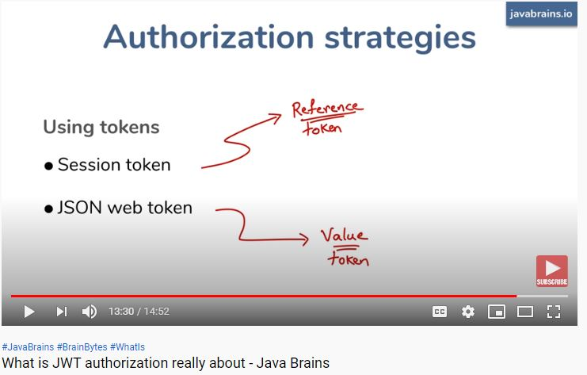

<!DOCTYPE html>
<html>
<title>Web_service_REST_WS</title>
<head>

<style type="text/css">
	.redC{color:red}
	.aa{color:blue}
	</style>
</head>
<body>
<div data-role="page">
   
  <div data-role="main" class="ui-content">
	<b class="redC">NOTE:-</b><br/>
	REST is stateless, server does not stores any session on server side.<br/>
	The client's application state should never be stored on the server, but passed around from the client to every place that needs it.<br/>
	That is where the ST in REST comes from, State Transfer. You transfer the state around instead of having the server store it.<br/>
	This is the only way to scale to millions of concurrent users. If for no other reason than because millions of sessions is millions of sessions.<br/>
	<b>Example of transfering the state is use of Token like JWT</b><br/>
	<br/>
	<b class="redC">Question:-</b>Can you tell the disadvantages of RESTful web services?<br/>
	<b class="redC">Answer:-</b>
	The disadvantages are:<br/>

	<b>1-</b>As the services follow the idea of statelessness, it is not possible to maintain sessions.
	(Session simulation responsibility lies on the client-side to pass the session id)<br/>
	
	<b>2-</b>We can't validate the request before hitting the actual logic.<br/>
	<br/>
	<b class="redC">Differentiate between SOAP and REST?</b><br/>
	<b>1-</b>SOAP supports only XML transmission between the client and the server.<br/>
	REST supports data of multiple formats like XML, JSON, MIME, Text, etc.<br/>
	<br/>
	<b>2-</b>SOAP is not commonly preferred, but they are used in cases which require stateful data transfer and more reliability.<br/>
	REST is commonly preferred by developers these days as it provides more scalability and maintainability.<br/>
	<br/>
	<b class="redC">Note:-</b> 
	REST provides idempotent methods automatically. GET, PUT, DELETE, HEAD, OPTIONS, and TRACE are the <b>idempotent</b> HTTP methods. POST is not idempotent	
    <br/><br/>
	<b>POST is not idempotent</b> because POST APIs are usually used for creating a new resource on the server. While calling POST methods N times, there will be N new resources. This does not result in the same outcome at a time.
	<br/><br/>
	Methods like GET, OPTIONS, TRACE, and HEAD are idempotent because they do not change the state of resources on the server. They are meant for resource retrieval whenever called. They do not result in write operations on the server thereby making it <b>idempotent</b>.
	<br/><br/>
	PUT methods are generally used for updating the state of resources. If you call PUT methods N times, the first request updates the resource and the subsequent requests will be overwriting the same resource again and again without changing anything. Hence, <b>PUT methods are idempotent</b>.
	<br/><br/>
	DELETE methods are said to be <b>idempotent</b> because when calling them for N times, the first request results in successful deletion (Status Code 200), and the next subsequent requests result in nothing - Status Code 204. The response is different, but there is no change of resources on the server-side.
	<br/>
	<br/>
	<b class="redC">Question:-</b>What makes REST services to be easily scalable?<br/>
	<b class="redC">Answer:-</b>REST services follow the concept of statelessness which essentially means no storing of any data across the requests on the server. This makes it easier to scale horizontally because the servers need not communicate much with each other while serving requests.<br/>
	<br/>
	<b class="redC">Question:-</b><br/>
	Based on what factors, you can decide which type of web services you need to use - SOAP or REST<br/>
	<br/>
	<b>1-</b>Does your service require statelessness?<br/>
	If yes, REST is suitable. If no, SOAP is preferred.<br/>
	<br/>
	<b>2-</b>What is the bandwidth/resource required?<br/>
	SOAP involves a lot of overhead while sending and receiving XML data, hence it consumes a lot of bandwidth.<br/>
	REST makes use of less bandwidth for data transmission.<br/>
	<br/>
	<b>3-</b>Does your service require support for multiple formats of data?<br/>
	If yes, REST supports multiple data formats which is why it is preferred in this case.<br/>
	<br/>
	<b>4-</b>Does the client require a formal strict contract?<br/>
	If yes, SOAP provides strict contracts by using WSDL. Hence, SOAP is preferred here.<br/>
	<br/>
	<b class="redC">Question:-</b>Is it possible to make asynchronous requests in JAX-RS?<br/>
	<b class="redC">Answer:-</b>Yes. the JAX-RS Client API provides a method called Invocation.Builder.async() that is used for constructing client requests that need to be executed asynchronously<br/>
		because bydefault REST is synchronous.<br/>
	<br/>
  <b class="redC">Question:-What is use of @ResponseStatus</b><br/>
  <b class="redC">Answer:-</b>
  We use @ResponseStatus to mark a method or an exception class with a status code and that should be returned
  On invoking the marked handler method or when a specified exception is thrown, the HTTP status will be set to the one defined using @ResponseStatus annotation.
  <font class="aa">If we mark our Controller class with this annotation. For such a case, the response code configuration will be applied to all the request handler methods.</font>
  <br/><br/>
  
  <b class="redC">Question:-How can we do Exception handling in Spring REST</b><br/>
  <b class="redC">Answer:-</b>
  @ControllerAdvice and @ExceptionHandler annotation are used to handle Exception in Spring REST 
  <br/><br/>
  
  <b class="redC">Note:-</b><br/>
  Note that <font class="aa">ResponseEntityExceptionHandler</font> is a convenient base class for @ControllerAdvice classes that 
  wish to provide centralized exception handling across all @RequestMapping methods through @ExceptionHandler methods.
  <font class="aa">Example in project:Spring-REST-JSON</font>
  <br/><br/>
  
  <b class="redC">Question:-What is @RestController</b><br/>
  <b class="redC">Answer:-</b>
  First of all, we are using Spring 4’s new @RestController annotation. This annotation eliminates the need of
  annotating each method with @ResponseBody. Under the hood, @RestController is itself annotated with @ResponseBody,
  and can be considered as combination of @Controller and @ResponseBody.
  <br/><br/>
  
  <b class="redC">Question:-What is @RequestBody</b><br/>
  <b class="redC">Answer:-</b>
  If a method parameter is annotated with @RequestBody, Spring will bind the incoming HTTP request
  body(for the URL mentioned in @RequestMapping for that method) to that parameter. While doing that, Spring will [behind the
  scenes] use HTTP Message converters to convert the HTTP request body into domain object [deserialize request body to
  domain object], based on ACCEPT or Content-Type header present in request.
  <br/><br/>
  
  <b class="redC">Question:-What is @ResponseBody</b><br/>
  <b class="redC">Answer:-</b>
  If a method is annotated with @ResponseBody, Spring will bind the return value to outgoing HTTP
  response body. While doing that, Spring will [behind the scenes] use HTTP Message converters to convert the return value to
  HTTP response body [serialize the object to response body], based on Content-Type present in request HTTP header. As
  already mentioned, in Spring 4, you may stop using this annotation.
  <br/><br/>
  
  <b class="redC">Question:-What is ResponseEntity</b><br/>
  <b class="redC">Answer:-</b>
  ResponseEntity is a real deal. It represents the entire HTTP response. Good thing about it is that you can control anything that
  goes into it. You can specify status code, headers, and body. It comes with several constructors to carry the information you
  want to sent in HTTP Response.
  <br/><br/>
  
  <b class="redC">Question:-What is the use of UriComponentsBuilder</b><br/>
  <b class="redC">Answer:-</b>
  This used for constructing URI. Particularly useful when you want to invoke webservices in your class. Eg:
  <pre class="aa">
  	String baseUri = "/sample-uri"
	UriComponentsBuilder builder = UriComponentsBuilder.fromUriString(uri);
	builder.queryParam("id", "1");
	String uri= builder.build().encode().toUriString();
  </pre>
  It is evident that you can pass additional params, to this. This provide a clean and efficient way of creating uris than writing those as plain text.
  <br/>
  <br/>
  
  
  <b class="redC">Question:-What is the difference between ResponseEntity<T> and @ResponseBody?</b><br/>
  <font class="redC">Answer:-</font>
  ResponseEntity will give you some added flexibility in defining arbitrary HTTP response headers.
  See the constructor here
  <pre class="aa">
  	ResponseEntity(T body, MultiValueMap<String,String> headers, HttpStatus statusCode) 
  </pre>
  If you don't need that, using @ResponseBody will be a tiny bit more concise.
  <br/>
  <br/>
 
  <b class="redC">Question:-</b>What is difference between sessionId and JWT<br/>
  <b class="redC">Answer:-</b> 
  Session is a reference token where as JWT is a value token.
  <!--<br/>-->
  <br/><br/>
  <b class="redC">Question:-</b>What is marshalling and unmarshalling in java<br/>
  <b class="redC">Answer:-</b>
  Marshalling is the process of writing Java objects to XML file. Unmarshalling is the process of converting XML content to Java objects<br/><br/>
  <b class="redC">Question:-</b>What is RestController  
  <br/>
  <b class="redC">Answer:-</b> The @Controller is a common annotation that is used to mark a class as Spring MVC<br/> 
  Controller while @RestController is a special controller used in RESTFul web services and the equivalent of @Controller + @ResponseBody.<br/>
  <font class="redC">@RestController = @Controller + @ResponseBody</font>
  <pre class="aa">
  	@RequestMapping(value="/orders", method=RequestMethod.GET)
	@ResponseBody
	public List<Account> accountSummary() {
    	return accountManager.getAllAccounts();
	}
  </pre>
  Now what the annotation means is that the returned value of the method will constitute the body of
  the HTTP response. Of course, an HTTP response can't contain Java objects. So this list of
  accounts is transformed to a format suitable for REST applications, typically JSON or XML.<br/>
  <br/>
  
   </div>
 <div data-role="main" class="ui-content">
 <b class="redC">Note:-</b>JAX-RS is a specification for RESTful and Jersey is implementation JAX-RS.<br/>
 <b class="redC">Note:-</b>JAX-WS is specification for SOAP and Apache Axis2 provide the implementation of JAX-WS.<br/>
 Stateless means, every single request from client to server will be considered as a fresh request. Because of this reason REST always prefers to choose HTTP as it a stateless protocol.<br/><br/>
 <font class="redC">JAX-RS Annotations</font><br/>
   1- @Path('Path')<br/>
   2- @GET<br/>
   3- @POST<br/>
   4- @PUT<br/>
   5- @DELETE<br/>
   6- @Produces(MediaType.TEXT_PLAIN [, more-types])<br/>
   7- @Consumes(type[, more-types])<br/>
   8- @PathParam()<br/>
   9- @QueryParam()<br/>
   10-@MatrixParam()<br/>
   11-@FormParam()<br/><br/>
   <font class="redC">@Path() Annotation:-</font><br>
   Its a Class and Method level of annotation This will check the path next to the base URL.<br/>
   <font class="redC">@GET Annotation:-</font><br/>
   Its a method level of annotation, this annotation indicates that the following method should respond to the HTTP GET request only. 
   In general it is use to get data form server because @Produce Annotation will work only on @Get Method. 
   Similary all others will work for specific request<br/>
   <font class="redC">@Produces Annotation</font><br/>
   Its a method or field level annotation, This tells which MIME type is delivered by the method annotated with @GET.<br/>
   <font class="redC">@Consumes Annotation:-</font><br/>
   This is a class and method level annotation, this will define which MIME type is consumed by the particular method.<br/>
   <font class="redC">@PathParam URL Syntax</font><br/>
   http://localhost:7001/RestServiceName/rest/customers/<b>100/Java4s</b><br/>
   <font class="redC">@QueryParam URL Syntax</font><br/>
   http://localhost:7001/…/rest/customers?<b>custNo=100&custName=Java4s</b><br/>
   <font class="redC">@MatrixParam URL Syntax</font><br/>
   http://localhost:7001/…/rest/customers<b>;custNo=100;custName=Java4s</b><br/>
   <font class="redC">@FormParam URL Syntax</font><br/>
   If we have a HTML form having two input fields and submit button. Lets client enter those details and submit to the RESTful web service<br/>
   <br/>
   
    <b class="redC">Question:-</b>How to consume REST Web service in java<br/>
	There is two different way to consume<br/>
	<b class="redC"> By creating client</b><br/>
	<pre class="aa">
	Client client = ClientBuilder.newClient();
	WebTarget target = client.target("http://host:8080/context/rest/method");
	JsonArray response = target.request(MediaType.APPLICATION_JSON).get(JsonArray.class);
	</pre>
	<b class="redC"> By http connection(we are using)</b><br/>
	<pre class="aa">
	public class NetClientGet {
    public static void main(String[] args) {
        try {

            URL url = new URL("http://localhost:3002/RestWebserviceDemo/rest/json/product/dynamicData?size=5");//your url i.e fetch data from .
            HttpURLConnection conn = (HttpURLConnection) url.openConnection();
            conn.setRequestMethod("GET");
            conn.setRequestProperty("Accept", "application/json");
            if (conn.getResponseCode() != 200) {
                throw new RuntimeException("Failed : HTTP Error code : "
                        + conn.getResponseCode());
            }
            InputStreamReader in = new InputStreamReader(conn.getInputStream());
            BufferedReader br = new BufferedReader(in);
            String output;
            while ((output = br.readLine()) != null) {
                System.out.println(output);
            }
            conn.disconnect();

        } catch (Exception e) {
            System.out.println("Exception in NetClientGet:- " + e);
        }
    }
}
	</pre>
	
<b class="redC">Question:-</b>Give me the scenario when you go for rest and when you go for soap <br/>
<b class="redC">Answer:-</b><br/>
<b>1-</b>When you want to validate request data which is possible using xsd in SOAP <br/>
<b>2-</b>If you are using REST method then it may be case that method that you are using like PUT or PATCH may not support to 
particular browser<br/><br/>
</div>

<div data-role="main" class="ui-content">
<b class="redC">Question:-</b>What are the popular JAX-RS implementations.<br/>
<b class="redC">Answer:-</b> 
Some of the popular JAX-RS implementations available today are:<br/>
<b>1-</b>Jersey<br/>
<b>2-</b>RESTEasy<br/>
<b>3-</b>Apache CXF<br/>
<b>4-</b>Restlet<br/>
<b class="redC">Question:-</b>What are the popular JAX-WS implementations.<br/>
<b class="redC">Answer:-</b> 
Some of the popular JAX-WS implementations available today are:<br/>
<b>1-</b>Apache CXF<br/>
<b>2-</b>Apache AXIS<br/>
<b class="redC">Question:-</b>What are the most popular JSON processing libraries to work with Java.<br/>
<b class="redC">Answer:-</b><br/>
<b>1-</b>Jackson<br/>
<b>2-</b>GSON<br/>
<b>3-</b>JSON.simple<br/>
<b>4-</b>JSON-P<br/>
But big question is that which should we use 
Jackson is your winning library 
JSON.simple is a nose behind and the other two are in the rearview mirror. <br/>
<b class="redC">Question:-</b>Difference between Jettison and Jackson.<br/>
<b class="redC">Answer:-</b><br/>
<b>1-</b>Jettison is old.<br/>
<b>2-</b>Jackson is arguably the standard Java Library for processing JSON.<br/>
 </div>
</div>
</body>
</html>
